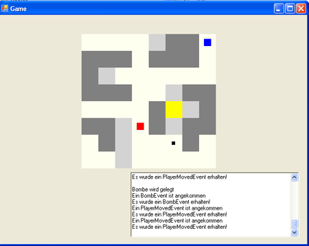
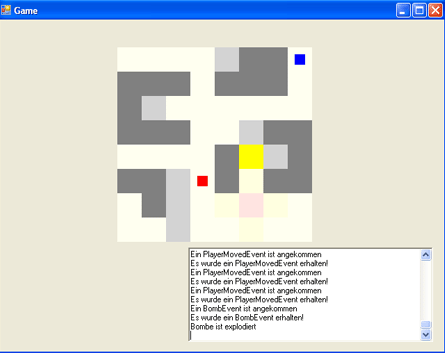
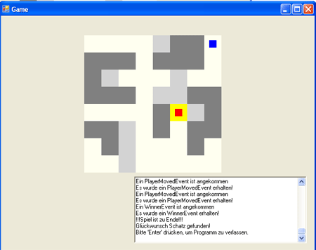

I developed Dyna4_dotNet in one of my university classes. It was not only fun to do it, I won a price for that (Visual Studion 2003). For it was not my favorite IDE of course I sold it immediately on ebay for good money :). It is open source, so you can download it and have a look how it was done (see end of page).
It is a distributed application: there is a game server which hosts all games, and there a clients which connect to the server. Because I more or less developed a prototype it starts on localhost by default. You have to start the game server and after that clients (on the same machine) which connect to the server. But it uses the TCP/IP network stack so feel free to make it work form all machines within your network.
Installation
There is no big installation routine to do. You only need to have installed .Net version >=1.1. Anyway download it and do following:
- Execute /dynablaster/server/bin/Debug/dynablasterServer.exe to run the game server. This is just a command line programm.
- Start the client by executing /dynablaster/client/bin/Debug/client.exe. This time you can see a proper GUI window.
You have to start the server before(!) the client. To be able to play a game you have to start more than one client, so before the game starts at least two clients have to join one certain game (identified by the game name). Inside the game before you can move your player you have to activate it by clicking inside the text field. Further more watch out that the firewall does not block the application.
Documentation
Unfortunately most of the documentation is in german (manual, bits of source code and application itself). Maybe if I find some spare time (most likely not) I will translate the stuff to english. You can find the documentation (how to start game, what to do in the game etc.) under /dokumentation/dynaInfo.pdf.
Design
For the application design I used some UML. I did it with Rational Rose, you can look at the UML drawings by opening dokumentation/dynaUML/start.html with your browser. It is a Java applet, so applet functionality needs to be
available for your browser.
Source Code
If you’re interested in exploring the source code (it is done with C# .Net), the application was developed as a Visual Studio Project, so you can start it
in your Visual Studio (both 2003 and 2005). There you can see the server and client codebase and the shared libs both server and client need.
Screenshots
Here some screenshots to make you curious…
A bomb (black point) got layed down with ‘Enter’ to get away the grey stone. Red player is going away with cursor-keys so he does not get hit:

Bomb is exploding:

Stone has been blown away. Way is open to get to the treasure (yellow field). Game is finished red player is the winner:

Download
For downloading I provided two versions:
- dyna4_dotNetOld: This is the old version. It provides a clear layered application, but inside client, server and shared_lib modules there are many monster classes, which are difficult to understand, the code is cluttered with duplicate to code comments etc..
- dyna4_dotNetRefactored: This is the new version of my application.The client, server and shared_lib modules are all refactored, that means that the application has got the same functionality, so you won’t see any difference when running the game. But the structure is much better and I introduced tests (with NUnit, RhinoMock) which made lots of refactorings safer.
If I find some time I will release a refactoring case study (what changes have I done, why, how long did it take, which problems occurred, what results have been achieved).